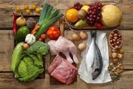

Dietas saludables
Existe el mito de que hacer una dieta con el fin de bajar de peso o estar mas saludable es comer lo menos posible o solo comer lechuga, pero esto esta lejos de una dieta sana y saludable. En la actualidad existe una gran variedad de dietas, cada una con sus beneficios y contraindicaciones dependiendo de la persona que las consuma. Esto viene a demostrar como cada cuerpo es distinto y reacciona de distinta manera, no necesariariamente lo que te hace bien le hará bien a otro. A continuación te recomendamos una gran variedad de estas, cada una con sus particularidades para que elijas cuál va mejor contigo:
-
Cetogénica
Es una dieta alta en grasas y baja en carbohidratos, busca hacerte adelgazar comiendo proteínas y grasas. debes comer: carne, pescado, huevos, verdura, grasa natural. debes evitar: azúcar y alimentos en almidón
-
Blanda
Siempre que tengamos que recurrir a una dieta blanda es porque queremos devolverle la estabilidad a nuestro sistema digestivo, esto se logra con alimentos ligeros y de fácil digestión: verduras/frutas, proteínas de origen animal, arroz blanco etc.
-
Paleo
La dieta paleo o “dieta paleolítica” está basado en el enfoque de “volver a nuestros orígenes” se basa en lo que seguían nuestros antepasados como producto de la caza y recolección, los alimentos eran a base de carne, pescado, frutas y verduras.
-

-
Dukan
La dieta dukan es una de las más altas en proteinas, la clave está en esta, ya que te permite estar saciado más tiempo, lleva trabajo digerirla y tiene pocas calorías a diferencia de los carbohidratos.
-
Mediterránea
La dieta mediterránea es una de las dietas más saludables que existen, se trata de la alimentación inspirada en la cultura y los alimentos propios de la mediterránea, se recomienda el consumo de frutas, hortalizas, aceite de oliva, etc
-
-
Proteica
Una dieta proteica recomienda que las personas que la hacen obtengan el 30% y el 50% de sus calorías totales a partir de proteínas, te ayuda a perder peso reduciendo el apetito, aumentando la tasa metabólica y la producción de cetosis.
-
Disociada
La dieta disociada consiste en perder peso haciendo un uso racional de los alimentos, es un equilibrio entre ácidos y bases. Su categoría son glúcidos, proteínas y alimentos neutros.
-
Alcalina
La dieta al alcalina se basa en el concepto del ph de los alimentos. Esta dieta es principalmente vegetariana, ya que básicamente son verduras y frutas frescas, cereales, frutos secos y legumbres.
Nutrición Diabetica
-
¿Qué puedo comer si tengo diabetes?
Tener diabetes no significa que no pueda comer lo que le gusta, sino que, puede pero con menor frecuencia, los alimentos recomendados son: verduras, frutas, granos, proteínas, lácteos descremados o bajos en grasa.
-
-
¿Qué alimentos y bebidas debo limitar si tengo diabetes?
-Alimentos fritos y otros ricos en grasas saturadas/trans -alimentos con alto contenido de sodio -dulces - bebidas como azúcares agregados
-
-
¿Me ayudan con la diabetes los suplementos y las vitaminas?
Es posible que necesite suplementos si no puede obtener la cantidad suficiente de vitaminas y minerales de los alimentos.
-
-
¿Por qué debo hacer actividad física si tengo diabetes?
-reduce los niveles de glucosa -baja la presión arterial -mejora la circulación de sangre -quema calorías adicionales -mejora su estado de ánimo -mejora el sueño
-